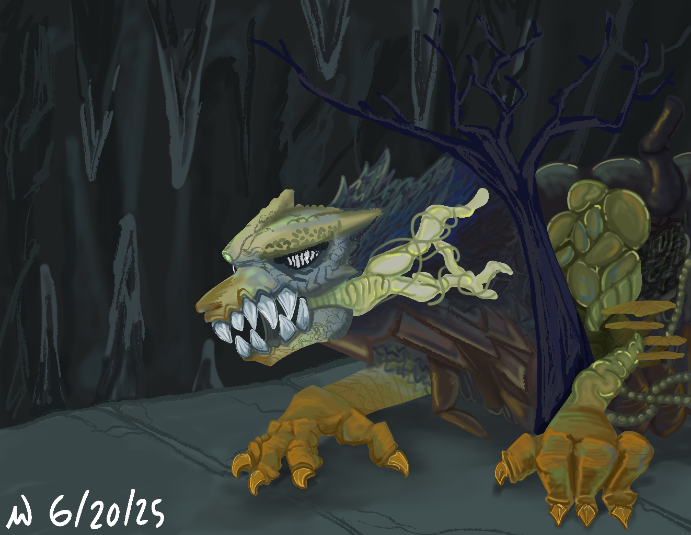
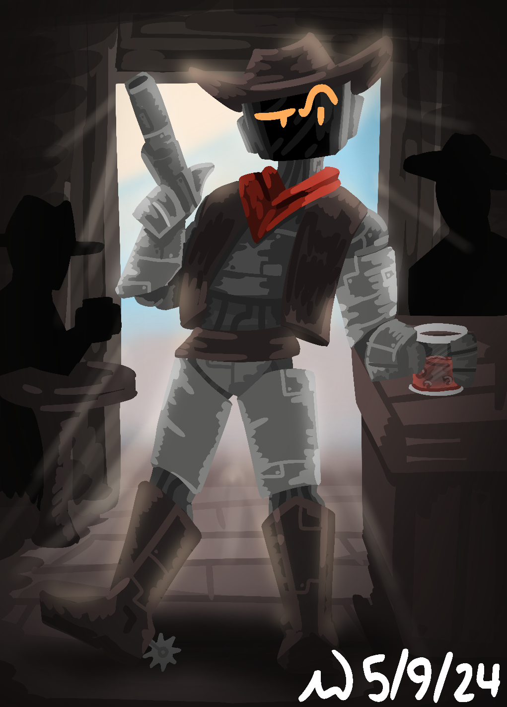
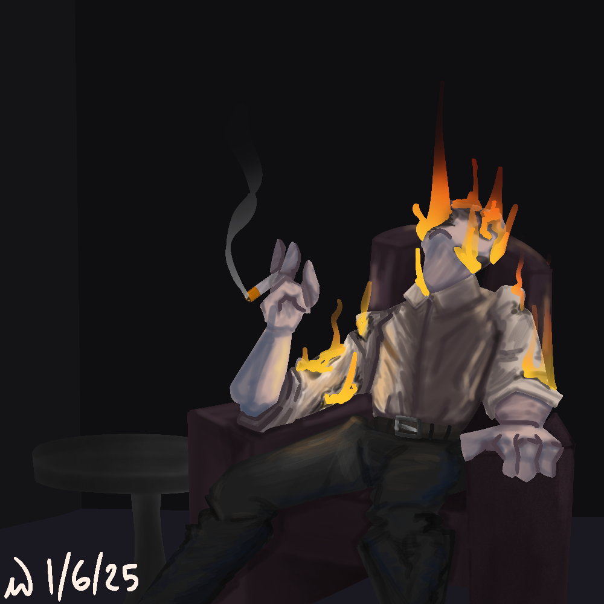
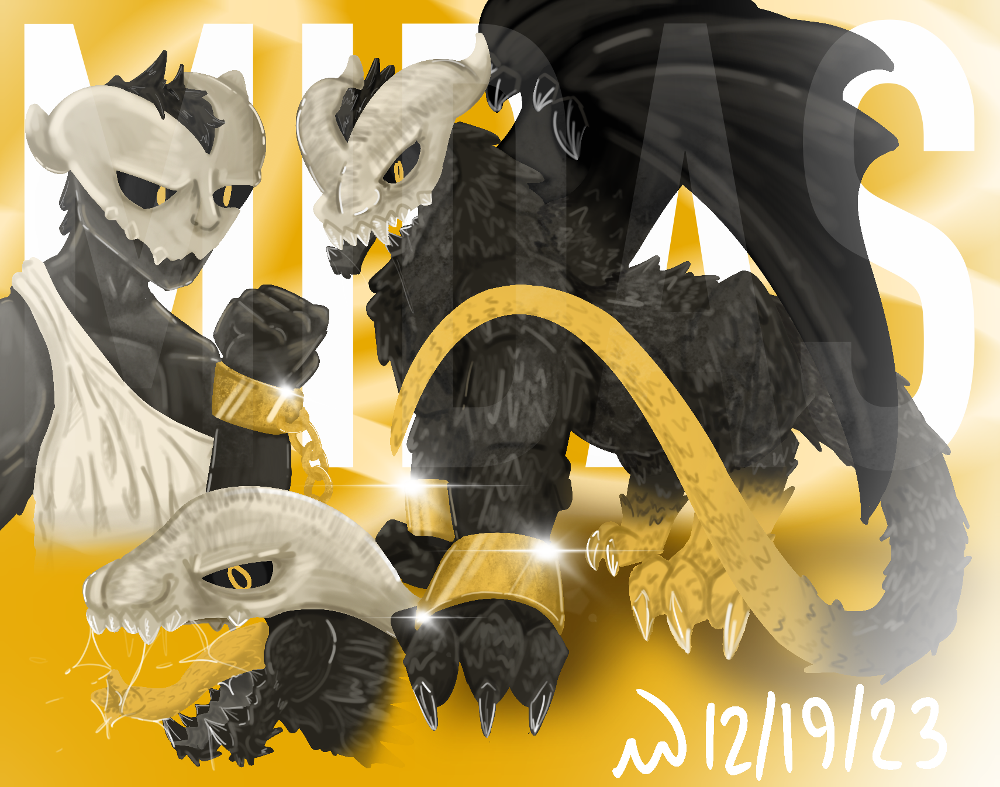
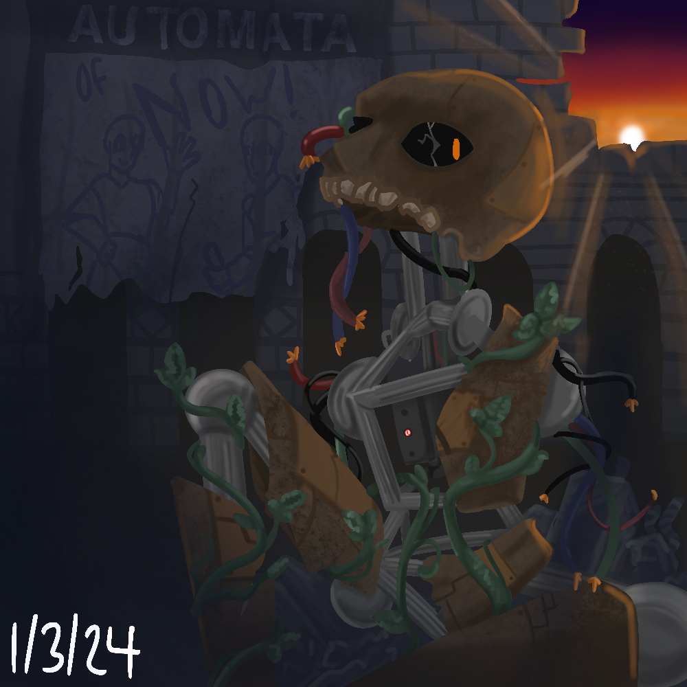
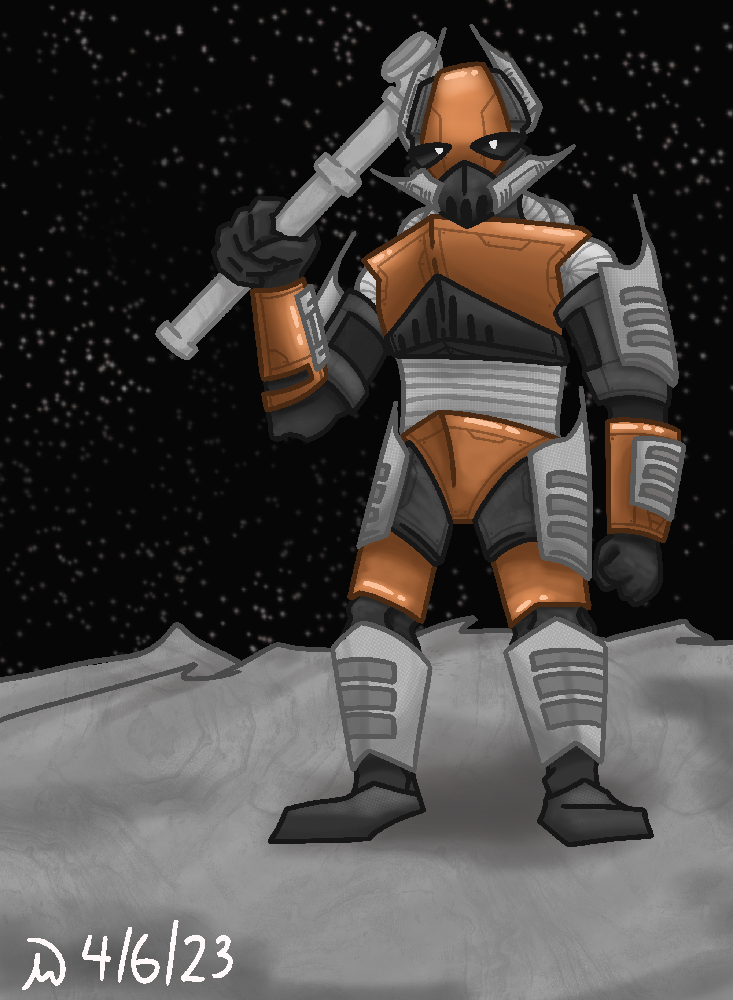
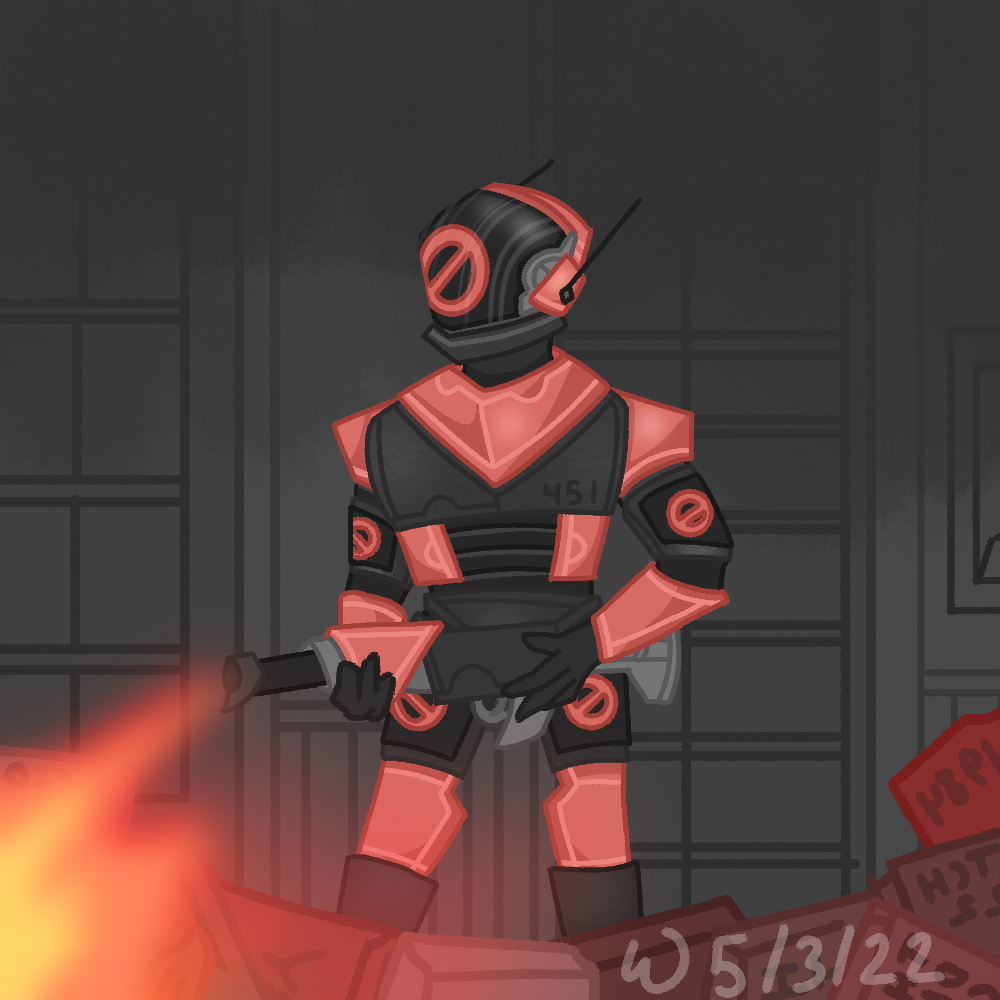
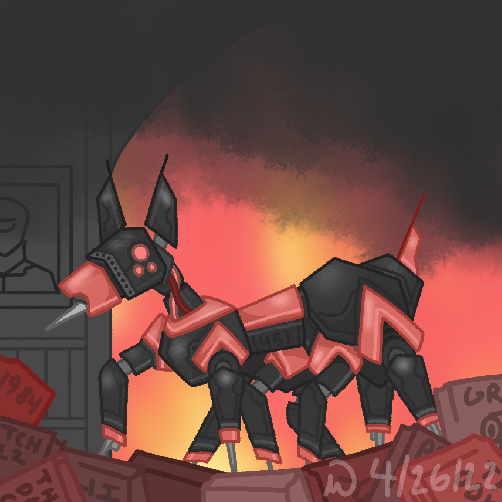

OTHER

24x12, Acryllic on Canvas, 2024

12x24, Acryllic on Canvas, 2024
This piece was made for my father for christmas, and is directly inspired by Lord Huron's album Long Lost. It's a fantastic album about the fragility of life and how with time, everything becomes long lost.

This Artwork was inspired by album Murder of the Universe and it's cover art. I think the most difficult part of this piece was creating the body of the creature based on the rather vague description given in the first few tracks.
I think my favorite part about this piece is the organic nature of the altered beast, and how structure makes way to noise and chaos as your attention goes from left to right.


This drawing was inspired by Pink Floyd's Wish You Were Here—if you couldn't tell already, music often plays a role in my artwork—and specifically, the energy of the album and it's cover art. There's almost a feeling of hopelessness throughout the album, and mourning for one you have loved.





These pieces were created for a book presentation project on the novel Fahrenheit 451 by Ray Bradbury.